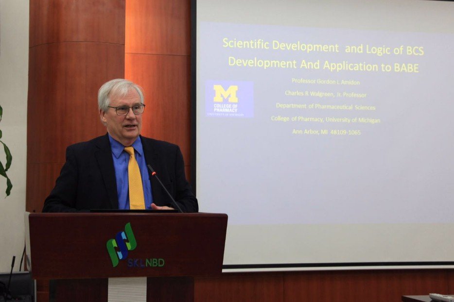
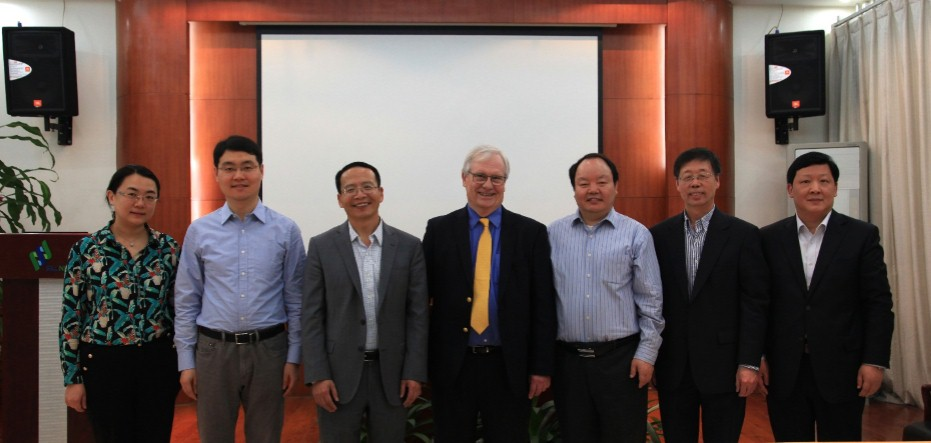

2017年4月14日上午，应北京大学药学院院长、天然药物与仿生药物国家重点实验室主任周德敏教授的邀请，美国密歇根大学药学院的著名药剂学专家Gordon L Amidon教授来我院访问交流，并在国家重点实验室二层报告厅作了题为“Scientific Basis for Biopharmaceutical Classification System(BCS).”精彩学术报告。报告会由周德敏教授主持，美国药学会杂志副主编余煊强博士，美国华人药学会会长杨永胜博士，药学院吕万良教授，王坚成教授、汪贻广特聘研究员、夏青副教授、黄健副教授、王琪副教授、肖苏龙副研究员、张传领老师、程刚老师和同学等共五十余人参加了报告会。
Gordon L Amidon教授致力于生物药剂等效性评价，他与美国FDA合作创建的BCS系统（生物药剂分类系统）为全球药监机构、企业和学术界广泛接受，影响了生物等效标准的建立。报告中，Gordon L Amidon讲述了BCS系统的发展历史与内在的原理，深入浅出的阐述了生物等效标准建立的必要性。他从药物的溶解性与渗透性出发， 讲述了BCS系统的分类依据。Gordon L Amidon教授语言精练、风趣幽默，对科学问题的讲解深入浅出，深受同学们欢迎。
报告会结束后，针对老师和同学们的提问，Gordon L Amidon教授做了详细的解答。最后，周德敏院长表示，希望通过此次报告会搭建北京大学药学院-密歇根大学药学院合作平台，开展高水平的合作研究，同时，Gordon L Amidon教授也表示，希望可以将这套生物药剂分类系统的经验传授给中国，帮助CFDA建立更加完善的生物药剂评价体系。
（张子威 供稿）